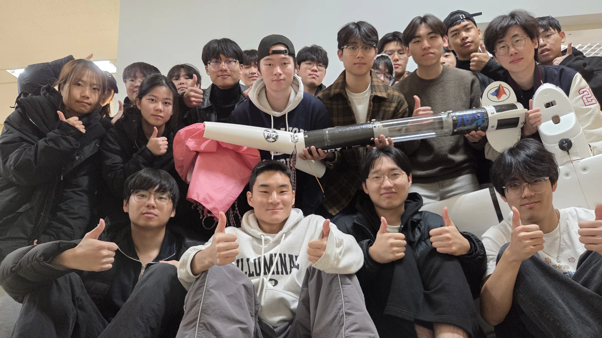
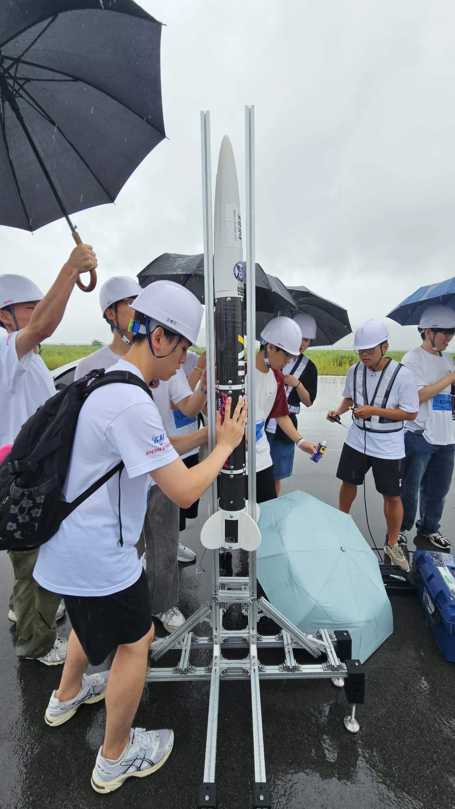
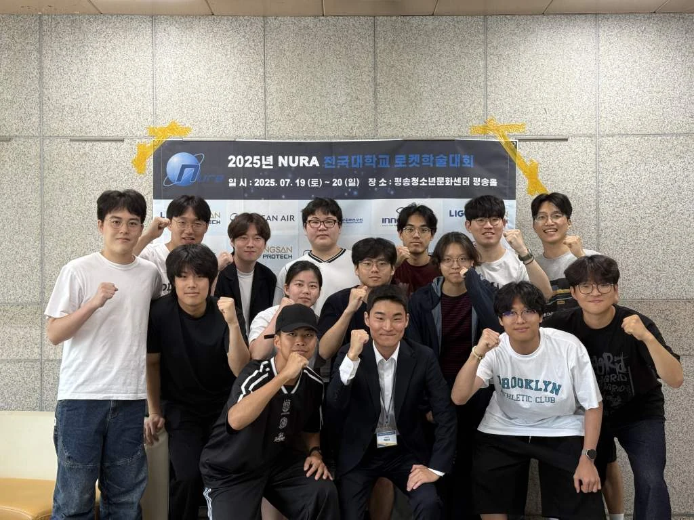

Launch day
A day at the field: the people, the assembled vehicle and the launch rail.
The public timeline records a launch at KARI Goheung and completion of parachute and 360-degree video missions.
Dated evidenceThe people and moments around the hardware.
A day at the field: the people, the assembled vehicle and the launch rail.
The public timeline records a launch at KARI Goheung and completion of parachute and 360-degree video missions.
Dated evidence

Hardware checks and preparation at the field. Month attributed from the activity archive; exact capture dates are unverified.

The event dates are recorded on the conference banner.
PSI presented its rocket programme at the NURA academic conference.
Dated evidence
Assembly, inspection and the team around the apparatus. These are preparation photographs, not firing results; the month follows the activity archive.
Avionics sensor fusion, swirl-injector mixing and staged-rocket control were recognised. The research year is 2025; the award ceremony took place in 2026.
Read the recordPSI presented work on coursework-linked rocket development, injector mixing and mesostructures in small aircraft at the fall conference.
Read the recordA university recognition recorded in PSI’s public history, followed by a commemorative team photograph.
Read the recordResearch covered stage separation, sensor fusion, aircraft stability and swirl-injector mixing.
Read the recordThe vehicle flew with advanced avionics. The related manuscript records that recovery did not succeed on this flight.
Read the recordCarbon-fibre bodies, CFD nozzle optimisation and satellite lifetime services each received an encouragement award (장려상).
Read the recordThe first public launch milestone for PSI’s solid-propellant sounding-rocket programme.
Read the recordThe founding date recorded by the POSTECH PSI organisation. Preparations had begun in 2023.
Read the record